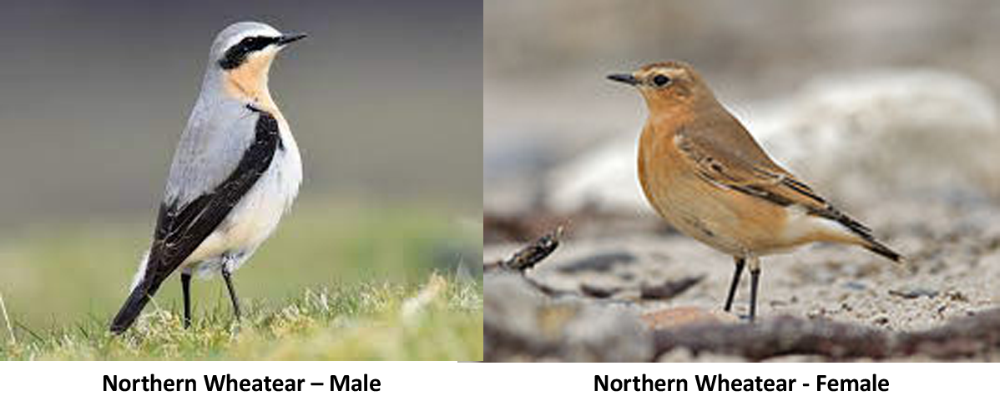

Long-distance Songbirds
Path:Central Africa → Red Sea → Siberia
Total Distance: 10,000 - 18,000 km
Peak Movement: March-July
Typical Altitude: 3,000–5,000 ft
Notes: Prefers open ground and coastal areas. Sometimes goes Trans-Atlantic.
